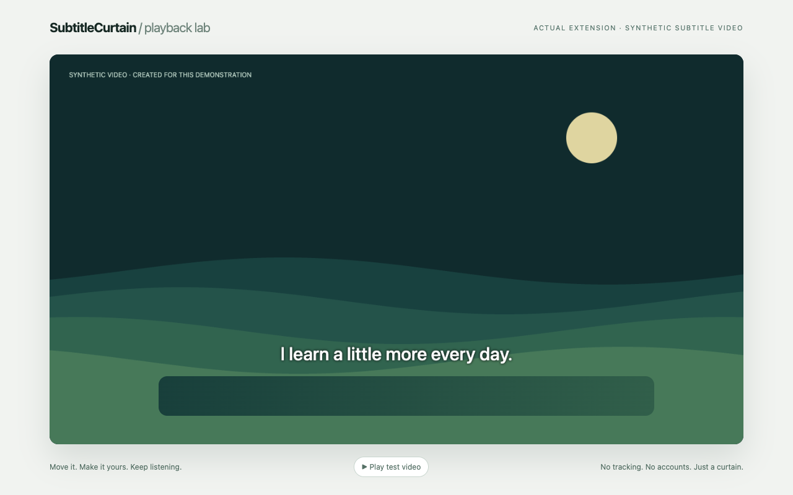
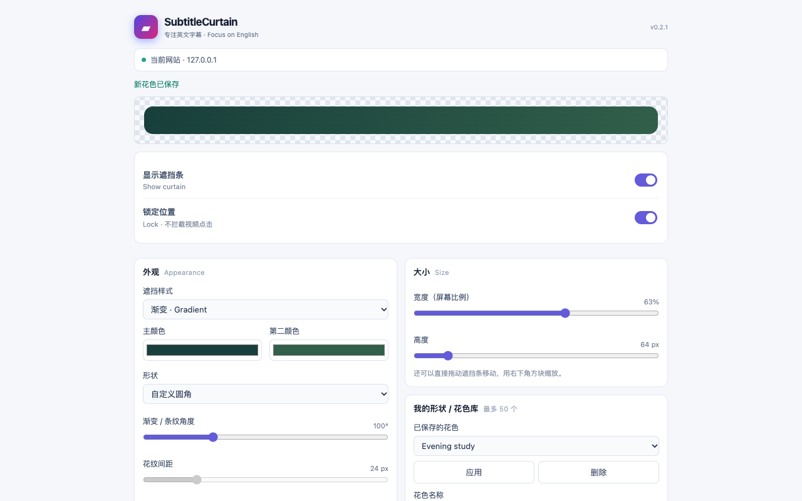

Exactly where you want it
Drag freely, resize from the corner, or fine-tune with your keyboard. Lock it when you're ready so clicks reach the player beneath.
Your eyes keep finding the translated subtitles. Put a small curtain over them, and give your listening a little more space.
Free to use · MIT licensed · No account · No tracking

MAKE IT YOURS
One job, with the controls you need. No subtitle detection, no uploads, no setup account.
Drag freely, resize from the corner, or fine-tune with your keyboard. Lock it when you're ready so clicks reach the player beneath.
Solid colors, gradients, four patterns, opacity, rounded corners and custom polygon shapes. Save your favorites in the style manager.
Hide and restore in one click. Site preferences survive a refresh. Export and import your saved styles as a small JSON file.

PICK YOUR BROWSER
GitHub downloads stay available even if store listings are added. No coding or developer tools needed to use it.
Get the Chromium ZIP below. Extract it into a folder you'll keep.
Type this into the address bar: chrome://extensions
Enable Developer mode → Load unpacked → choose the folder containing manifest.json.
Open SubtitleCurtain from the extensions menu. Turn on Show curtain, position it, then lock it.
GitHub ZIP upgrades are manual: replace the same folder, reload the extension, refresh the page. Store ZIPs are for publishers, not this installation flow.
Allow Userscripts for the script installation page and the video websites you choose.
Open the Greasy Fork page in Safari → Install this script → Extensions → Userscripts → install. Then refresh your video page.
Extract the Userscripts ZIP in Files. In the Userscripts app, choose Set Userscripts Directory and select the folder directly containing SubtitleCurtain.user.js. Keep existing scripts in the same directory.
iPhone/iPad device acceptance is pending; an iPad installation problem has been reported. Native iOS video fullscreen, picture-in-picture and videos inside native apps cannot be covered.
GitHub .user.js backup ↗ · Safari setup, updates & known limits ↗Compatibility is a test result, not a promise. Read the platform status ↗
ON YOUR DEVICE
The curtain doesn't analyze video or read subtitle text. It saves website hostnames and your preferences locally, so each site's curtain can return. Nothing is sent to the developer. Script managers may contact their update host separately.
Read the privacy policy ↗GOOD TO KNOW
No. You position a visual curtain manually. It can cover translated text that is part of a normal webpage video, but it does not edit the video, recognize languages or find subtitle lines.
Store materials are being prepared; no listing has been published. Until there is a real listing, the buttons lead to free GitHub installation. Brave and Opera use the shared Chromium package.
Supported webpage/player-container fullscreen modes are covered in the test records. Direct video-element fullscreen may restrict editing. Native iOS system video fullscreen, picture-in-picture and native apps are outside the webpage and cannot be covered.
GitHub Chromium ZIPs need manual replacement and reload. Userscript metadata supplies update links, but manager/version behavior varies; Userscripts has disabled automatic checks in some releases. Manual replacement of the same script remains the fallback.
That's intentional: a locked curtain lets clicks reach the player. Unlock in settings to move it. Alt + Shift + S toggles visibility; Alt + Shift + L toggles locking where the browser delivers those shortcuts.
Star the repository, share your experience, or report a bug. No rewards, no exchanges — just a small open-source tool growing through real use.
☆ Star on GitHub ↗Report a problem ↗